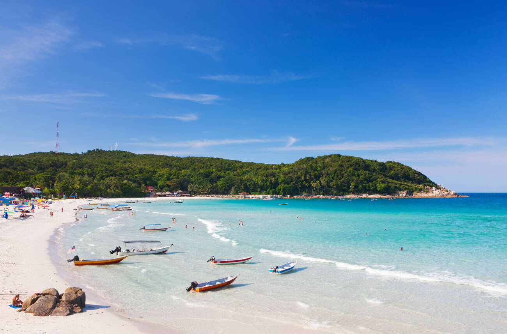
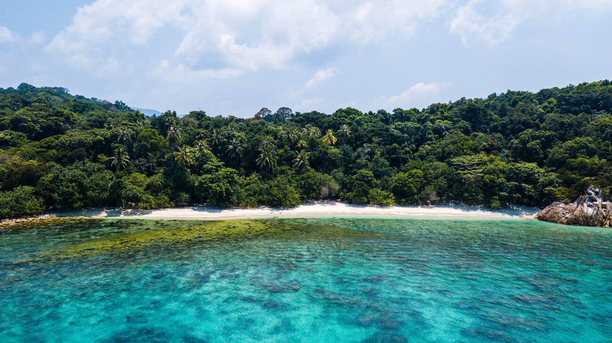
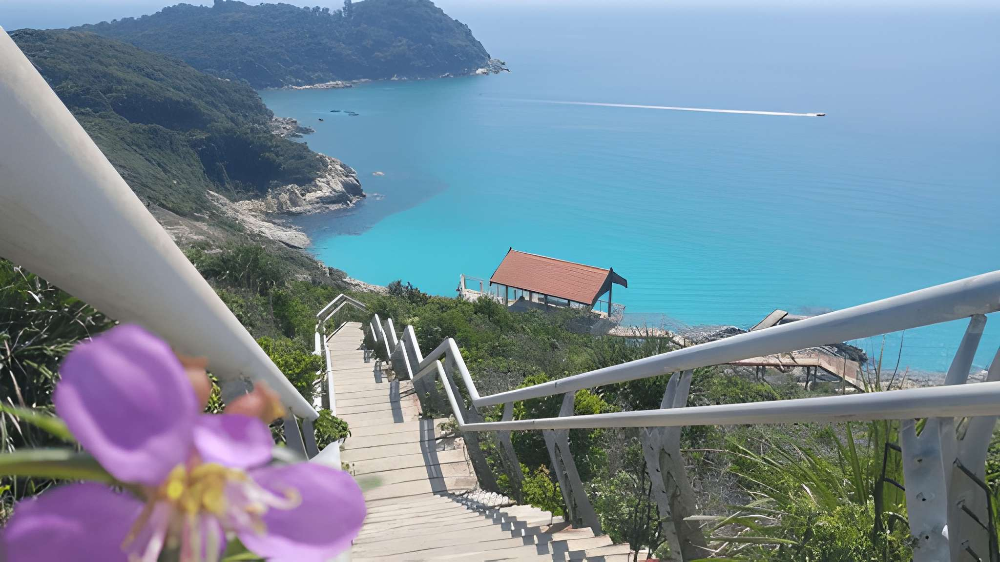
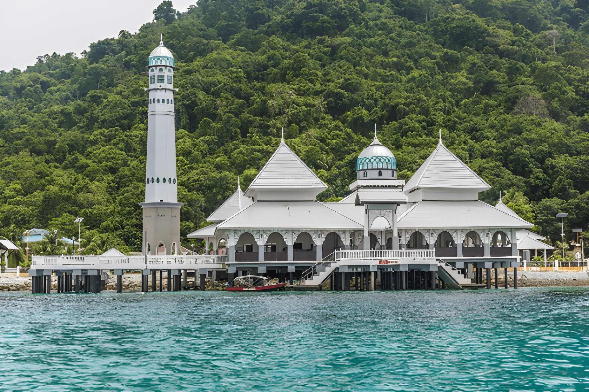
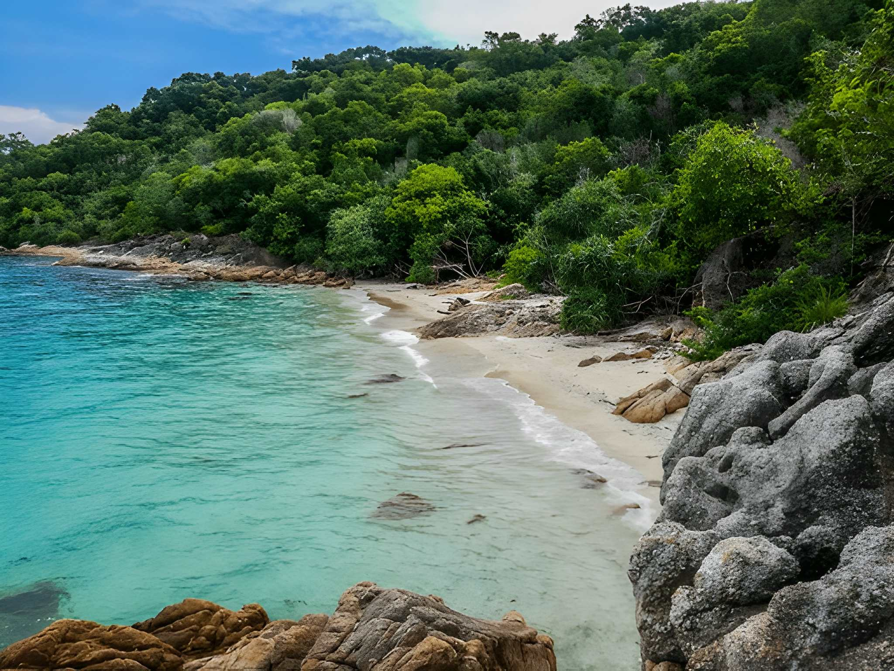
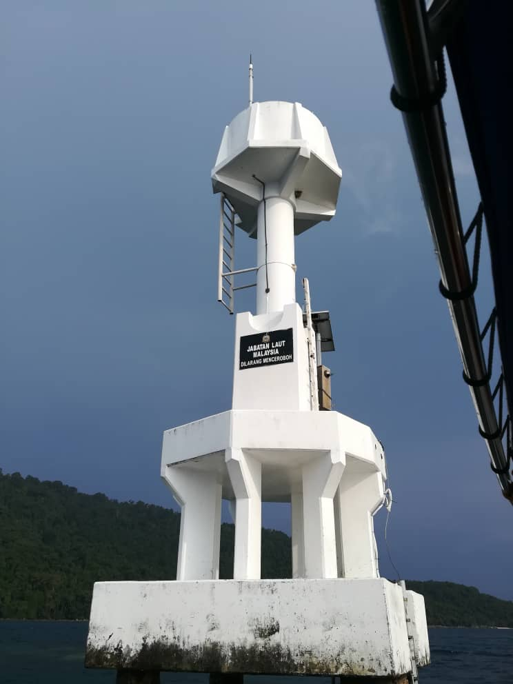
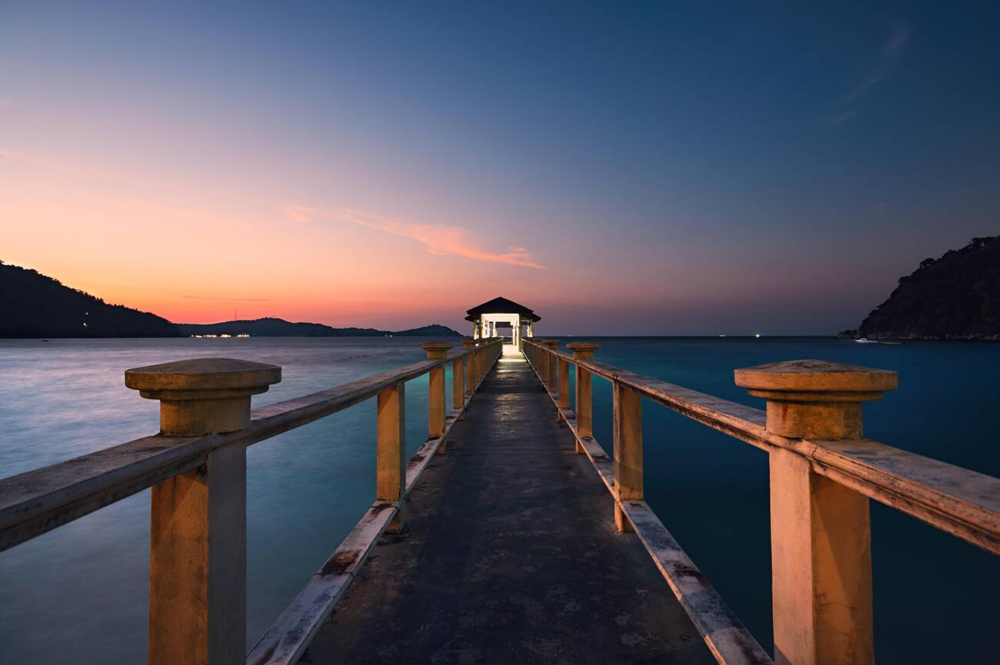

Attractions Gallery
Explore the most iconic and beautiful spots across Pulau Perhentian. Picture perfect moments from this island of paradise.

Long Beach: The heart of Perhentian Kecil. Stunning sunsets & dynamic nightlife await!

Turtle Beach: A protected, pristine stretch of sand where sea turtles often come to nest.

Coral Bay: The island's serene sunset haven. Ideal for snorkeling, beachfront seafood, and a relaxed vibe.

Windmill Hill Stairs: Conquer the iconic steps for the best panoramic views of the island's turquoise coastline.

Floating Mosque Ar Rahman: A serene architectural marvel that appears to glide on the sea. A tranquil spot for reflection.

Adam & Eve Beach: Your secret slice of paradise on Pulau Perhentian.

Seabell Rock Light: A crucial marker on the reef between the two islands. This unique white tower provides a distinctive sight during boat trips.

Perhentian Besar Pier: Your welcoming gateway to the island. Famous for its dramatic sunsets and the perfect location for a romantic evening stroll.